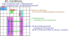
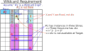
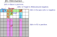
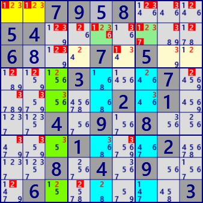

JEn
Junior Exocetには、Target(Object)の数nで分類されるいくつかの拡張種 (JEn) があります。
JE1
JE1は Targetが1つのタイプです。JE2での 一つのTarget(Object)がある位置に、確定数字（問題数字、または解析により確定した数字）があります。
JE1の要素は、Base、Base数字、1つのTarget(Object)、Base数字がない 空白のObjectです。
BaseのCrossLine、Targetと空白ObjectのSLineは、Junior Exocetの自然な形で定義します。
Sセル{S0,S1,S2}のカバーの仕方には、2つのタイプがあります。これは、JE1特有の条件です。
- S 基準 : 2つの CoverLine でカバーされる。
- Wildcard 基準 : 3つの CoverLine でカバーされる。

JE1 の論理
JE1の Base数字 のカバーの仕方別に次の論理が成り立ちます。
-
(1) S基準を満たす Base数字
- S基準 Lockedの証明 (CL:Cross-Line)
- 1)Base数字 #aは、S領域に2つのCoverLineがある とします。
- 2)S領域を含むCrossLineには、合わせて3つの#aインスタンスが必要である。
- 3)従って、Targetに #a がある。(3-2=1)

-
(2) Wildcard基準を満たす Base数字
- JE2 Lockedの証明 (CL:Cross-Line)
- 1)Base数字 #zは、S領域に2超のCoverLineがある とします。
- 2)S領域を含むCrossLineには、合わせて3つの#zインスタンス必要である。
- 3)従って、Targetに #z はない。(3-3=0)

JE1 の除外
JE1 が成立すると、次の除外ができます。
- Target の Wildcard(#z)は、negative に確定
- Baseの Wildcard は positive に確定、Base のもう一つの数字は未定。
- Escape にある Wildcard は negative に確定。
- Sline-1にある Wildcard は positive に確定。これが１つなら、対応セルの Wildcard 以外の候補は除外できる。
- BaseとTargetのWildcardが確定することで、これの影響圏の Wildcard 数字は negative になる。
最後の除外(除外5)は波及的な除外であり、次ステップの解析に委ねることもできます。 GNPXでは、Wildcard の効果をみるために、BaseとTarget(Object) の Wildcard からの 直接の除外を含みます。
GNPX implements direct exclusions from base wildcards and target (object) wildcards.

JE3
JE3は Targetが3つのタイプです。JE3 は次の図のように(一例です) 2つの JE2 を合成したもので、1つのTargetを共有しているケースです。共有することで、Targetが3つになります。
形式的には3解の合成も可能で、従ってJE4,... も考えられます。
ただし、同じ問題の同じ局面で複数の解があることは、全く普通のことであり、様々な解析アルゴリズムで見ることができます。
(GNPX "複数解析"で 複数解は多数みることができます。)
複数の解を合わせただけでは、新たなアルゴリズムとはいえません。
JE3 に意味があるとしたら、例えば、それぞれ単独では導けないが、Targetの1つを共有することによって直接的に導ける除外がある 場合です。

JE3 の例
次の例は、Bird文書 "07 JE3" の Example1 の解です。
同じ問題、同じ局面の 2つの解 なので、除外されるセル・数字は他方の解にも適用できます。
この例の場合は、2つの解を合成したことによる除外はありません。
by:David P Bird "JExocet Compendium"
http://forum.enjoysudoku.com/jexocet-compendium-t32370.html
"07 JE3 Examples v2a.odt"


From the left: Solution-1, Solution-2
..79.8...54.......6...7.5.....3...7......2.1...4.9.8.....1...2...8.4.9...6......3
JE2 Solution-1
Stem : r1c3
Base : r1c12#23 aligned type
Target1:r2c5 Companion1:-r3c5 Mirror1:r3c89
Target2:r2c7 Companion2:-r3c7 Mirror2:r3c46
CrossLine_ 0:c3 / 1:c5 / 2:c7
CoverLines
no:#1 size:2 CoverLine:r3,r8,-- (CLXidx:03,08,--) S012V:...4....9 ...4..... ........9
no:#2 size:2 CoverLine:r3,r8,-- (CLXidx:03,08,--) S012V:...4....9 ........9 ...4.....
no:#3 size:2 CoverLine:r4,r6,-- (CLXidx:04,06,--) S012V:....5.7.. ......7.. ....5....
--------------------------------------------------------------------------------
Explanation of candidate digits exclusion
Compatible digit check ... (in development)
incompatible pair(T1,T2) : #(1,2) (1,3) (2,1) (3,1)
valid pair(T1,T2) : #(2,3) (3,2)
r1c12 #1 is negative.
[Rule-3] Target1 r2c5#16 is a non-base candidate, then it is negative.
[Rule-3] Target2 r2c7#17 is a non-base candidate, then it is negative.
[Rule-9_nonBase] In Mirrar-2 r3c6#4 is locked non-BaseDigit. Then r3c46#1 is negative.
[Rule-10] Base(r1c12) are Fixed, then { r1c79#2 r2c349#2 r3c3#2 r1c78#3 r2c368#3 r3c3#3 } are negative.
(Both bases or both targets are in focus)
[Rule-12] Base(r1c12) are Fixed, then { r4c129#2 r9c14#2 } are negative. They prevent the Base from becoming positive.
[Rule-12] Base(r1c12) are Fixed, then { r5c12#3 r7c126#3 } are negative. They prevent the Base from becoming positive.
============================================================================
JE2 Solution-2
Stem : r3c7
Base : r3c89#1239 aligned type
Target1:r2c3 Companion1:-r1c3 Mirror1:-
Target2:r2c5 Companion2:-r1c5 Mirror2:r1c12
CrossLine 0:c7 / 1:c3 / 2:c5
CoverLines
no:#1 size:2 CoverLine:r4,r9,-- (CLXidx:03,08,--) S012V:........9 ...4....9 ...4.....
no:#2 size:2 CoverLine:r4,r9,-- (CLXidx:03,08,--) S012V:...4..... ...4....9 ........9
no:#3 size:2 CoverLine:r5,r7,-- (CLXidx:04,06,--) S012V:....5.... ....5.7.. ......7..
no:#9 size:2 CoverLine:r6,r8,-- (CLXidx:05,07,--) S012V:.......8. ......... .....6...
--------------------------------------------------------------------------------
Explanation of candidate digits exclusion
[Rule-3] Target2 r2c5#6 is a non-base candidate, then it is negative.